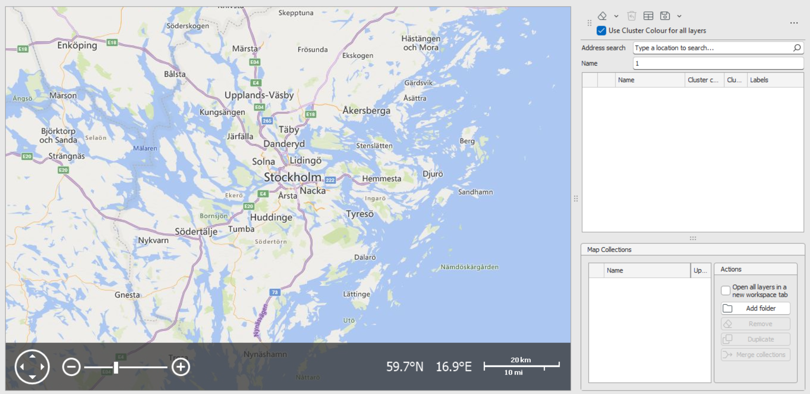
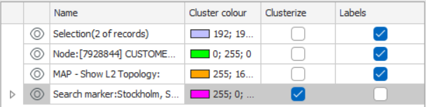
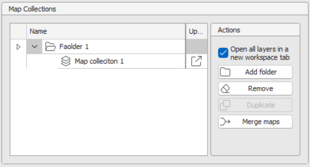

Map Workspace
The Map Workspace lets you visualize and work with network records on an interactive map. It supports drag‑and‑drop loading, layer controls, clustering, labeling, geocoded address lookup, and saved Map Collections for repeatable views.
Access & Data Loading
Open the Map
- View → Map on the Ribbon opens an empty Map Workspace tab.

Load Data onto the Map
- Drag & drop records (e.g., Sites with coordinates) from Network Explorer or a Spreadsheet onto the map.
- Context menu: Right‑click a record → Open in Map Workspace.
- Saved searches: Configure a search with Map as the output. Running it creates a new layer containing the search results.
Each drop/search creates a separate layer. Selecting multiple records and dropping them together groups them into one layer.
Click map objects to select them; details appear in the Properties pane.
Layer Control (right panel)
Each layer has inline controls:
- Visibility: Toggle the eye icon to show/hide a layer. Re‑enabling auto‑zooms to that layer.
- Name: Click to rename the layer.
- Cluster Color: Color applied when clustering is enabled for that layer.
(Default feature colors are defined in Designer; cluster color is applied dynamically to clusters.) - Cluster: Checkbox to turn clustering on/off for the layer.
- Labels: Checkbox to show/hide labels for all objects in the layer.
(Label definitions come from Designer and can't be changed here.)

Notes: Node icons typically cannot be re‑coloured; cluster color is most useful for paths (lines). If clustering is off, rendering falls back to Designer‑defined colors.
Map Toolbar
- Clear Layers: Dropdown to Clear Selected (multi‑select with CTRL) or Clear All.
An Undo button restores recently cleared layers. - Show in Spreadsheet: Opens the selected layers in a Spreadsheet tab.
- Use Cluster Color for All Layers: Global checkbox that applies the layer's cluster color to rendered objects across layers.
If unchecked, the map uses Designer defaults for rendering (especially visible for paths).
- Address Search: Enter an address and click Search to geocode it to coordinates.
Results are added as Search Marker layers; multiple addresses create separate marker layers.
(Geocoder is regionalized to your deployment, e.g., Sweden.)
Map Collections
Save the current set of layers for later reuse.

Create & Manage
Click Save → Save as New to create a Map Collection (shown under Map Collections beneath the Layer Control).
Rename the collection inline.
Folders: Use Add Folder then drag & drop collections to organize in a tree.
Actions: Delete, Duplicate (make a copy to tweak while keeping the original), Merge Maps:
- Choose a destination collection and a source collection to merge.
- After merging, the source collection is absorbed into the destination.
Open in New Workspace Tab: Checkbox to load a collection into a new Map tab instead of the current one. Multiple Map workspaces can be open simultaneously.
Open a Map Collection
- Click on the 'Open in' icon of Map Collection you want to open
- Depending on the selection of Open in New Workspace Tab, the map collection layers will unload into the existing map workspace or a new workspace tab will open.
✅ Tips
- Drop records in meaningful groups to create tidy, purpose‑built layers.
- Use Cluster + Cluster Color for dense areas; rely on Designer colors when clustering is off.
- Keep Report/Search outputs reproducible by saving them as Map Collections.